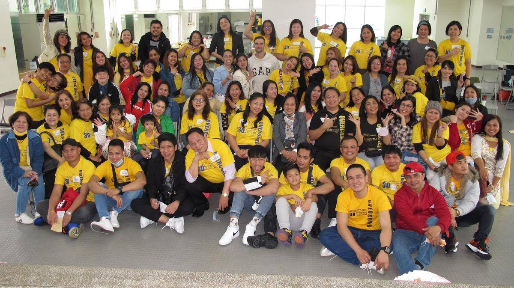

Groups & serve小組與服事
Church gets personal in smaller groups. Meet new friends, study the Bible and pray together through the week.
在小組中，教會生活更貼近彼此。平日一起認識新朋友、查經與禱告。
Find a group尋找小組
Groups for every week每週的小組
Women's Bible Study姊妹查經
At the TIC Ministry Center in Dazhi.
在大直台北國際教會事工中心。
Young Adult Men青年弟兄查經
Online Bible study for men ages 18–35.
18–35歲弟兄的線上查經。
Young Adults Bible Study青年查經
College age to mid-30s, in Dazhi.
大學生至30多歲，在大直聚會。
Community Bible Study社區查經
On Zoom, studying Matthew.
Zoom 線上，研讀馬太福音。
Men's Bible Study弟兄查經
On Zoom, studying Luke. Join on Zoom
Zoom 線上，研讀路加福音。加入 Zoom
Friday Zoom Prayer週五 Zoom 禱告會
Lunchtime prayer online. Join on Zoom
午間線上禱告。加入 Zoom
Life Group生命小組
At a host's home in Taipei.
在台北的接待家庭聚會。
Shilin Saturday Group士林週六小組
Near Taipei American School.
靠近台北美國學校。
Men's Group弟兄聚會
Fellowship and food.
團契與美食。
Kingdom Young Women國度青年姊妹
For women ages 18–35.
18–35歲姊妹。
Worship Circle敬拜圈
Extended worship and prayer for revival.
延長的敬拜與為復興禱告。
Neihu Bible Study內湖查經
A Sunday evening group in Neihu.
在內湖的主日晚間小組。
Monday LINE Prayer週一 LINE 禱告會
Pray together on LINE.
在 LINE 上一同禱告。
Daily Prayer Group每日禱告群組
A LINE group for prayer requests.
分享代禱事項的 LINE 群組。
Contact any group: info@taipeichurch.org
聯絡任何小組：info@taipeichurch.org

Tagalog · Pastor Obet他加祿語 · Obet 牧師
Filipino Ministry菲律賓事工
2F-1, No. 26, Zhongshan N. Rd. Sec. 3 · 台北市中山區中山北路3段26號2F-1
Mamsky Pinoy Restaurant, 208 ShanYing Rd, Guishan · 桃園市龜山區山鶯路208號
Looking for a new venue正在尋找新場地
Serve服事
Use your gifts發揮你的恩賜
Every member is rooted in Christ and empowered to serve. Stop by the welcome table on Sunday to get started.
每位肢體都在基督裡扎根，並被賦予服事的能力。主日請到接待桌開始參與。
Worship敬拜團
Lead the church in song.
帶領會眾敬拜。
Welcome招待
Greet guests and newcomers.
迎接訪客與新朋友。
Tech音控
Run sound and video.
負責音響與影像。
Media媒體
Capture services and run the livestream.
拍攝崇拜並負責直播。
Kids兒童
Teach and care for preschool to grade 5.
教導並照顧學前至五年級的孩子。
Youth青少年
Walk alongside our teenagers.
陪伴青少年成長。
Hospitality愛宴
Coffee, refreshments and care for people in need.
咖啡、茶點，並關懷有需要的人。